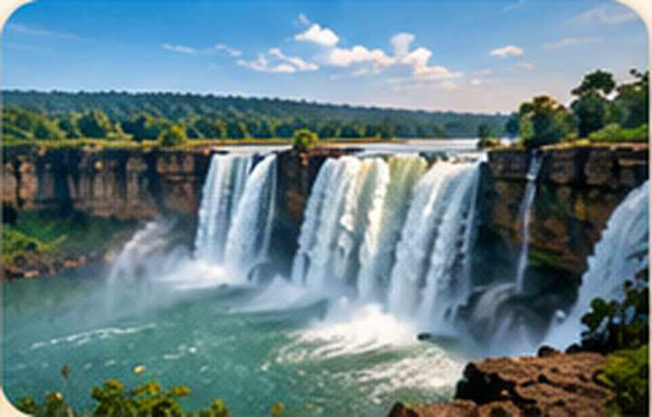

WATERFALL · BASTAR
Chitrakote Waterfall
Located on the Indravati River, this horseshoe-shaped waterfall is often called the “Niagara of India”. It is especially impressive during and after the monsoon.
Quick fact: It is about 40 km from Jagdalpur.